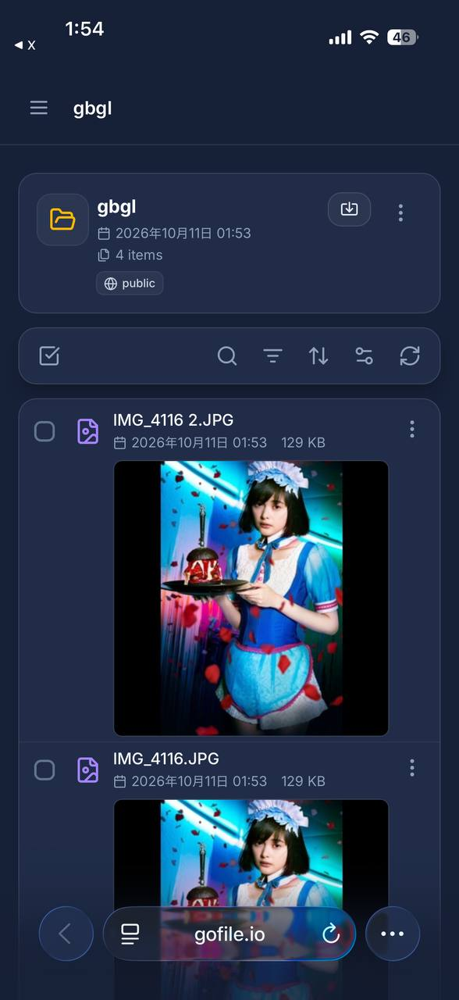

＜
LIVE
シリーズ
フォロー中
ショップ
おすすめ
🔍
秘密の晒し屋
限定公開動画コンテンツ #おすすめ
🎵 オリジナル楽曲 - 秘密の晒し屋
晒
+
159
11
12
シェア
🎵
⏸️
0:00 / 0:00
🏠
ホーム
👥
1
友達
+
💬
2
メッセージ
👤
プロフィール
📱
ようこそゲストさん。
アプリがインストールされていません。
インストールをしてからお楽しみください。
ストアでインストールする